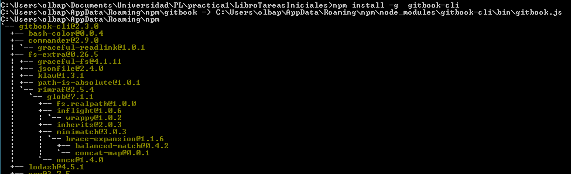
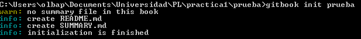
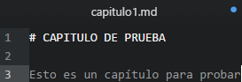
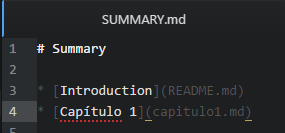
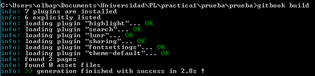
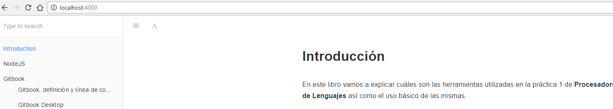

Gitbook
¿Qué es Gitbook?
Es una plataforma online para escribir y alojar documentación, así como una herramienta de código abierto.
Numerosos usuarios usan esta herramienta para escribir documentación (Librerías, API, etc) o para secciones tales como las conocidas F.A.Q.(Preguntas frecuentes). Además, puede servir para publicar libros técnicos, materiales didácticos, etc.
¿Cómo se usa?
Instalación de GitBook-cli
Podemos usar GitBook en su versión de línea de comandos para inicializar, construir y hacer públicos los libros que creemos, para instalarlo necesitamos tener Node.js instalado y ejecutar el siguiente comando.
npm install gitBook-cli [-g]
Nota: La opción -g se utiliza para hacer la instalación global.

Uso de GitBook-cli
Crear la estructura inicial de un libro
Para crear un nuevo libro, haremos uso del comando
gitbook init nombre, siendo nombre el nombre del libro a crear. Una vez ejecutado el comando, se nos creará la siguiente estructura.

- SYMMARY.md : Actuá como índice del libro, indica la distribución de los capítulos.
- README.md : Sirve como introducción al libro.
NOTA: Para trabajar con GitBook usaremos Markdown, que se explicará en este libro también
Añadir capítulos/Editar texto
Como ya se dijo. Usaremos en la creación de libros con GitBook la sintaxis MarkDown.
Los archivos se pueden organizar de la siguiente manera.
A modo de ejemplo, añadiremos un capítulo al libro que creamos antes.
- Creamos el archivo capitulo1.md con el contenido que queramos. 
- Editamos SUMMARY.md para añadir el capítulo que acabamos de crear. 
Construir el libro (Crear HTML)
Una vez hayamos terminado de escribir el libro, podemos proceder a construir los HTML que lo contendrán a partir de los ficheros.md que hemos creado previamente. Para ello usaremos el comando siguiente:
gitbook build
Los archivos HTML, CSS y JavaScript necesarios para la correcta visualización del libro se ubican en la subcarpeta _book. A continuación se muestra una captura de cómo quedó el ejemplo que hemos usado en el capítulo.

Otros formatos
NOTA: Se puede exportar el libro a otros formatos (
gitbook formato) Siendo los formatos los siguientes:- mobi
- epub
Servir el resultado
Una vez hemos creado el libro, podremos hacer que esté disponible en localhost para poder navegar correctamente por él.
gitbook serveLa opción
--portnos permitirá seleccionar el puerto.
